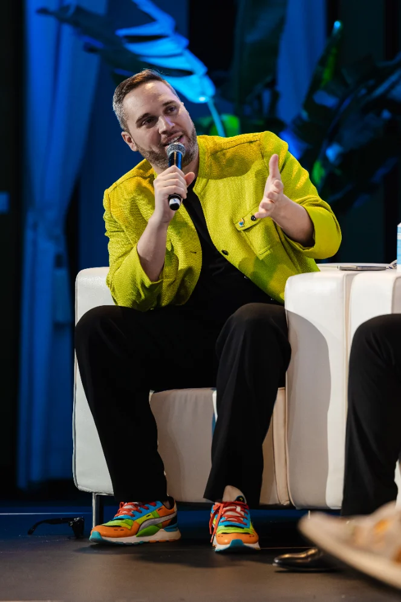

Redwan Meslem
Executive Director, Enterprise Ethereum Alliance
Digital asset strategy, from thesis to implementation.
I help institutions assess where digital asset markets are headed, what Ethereum can support, and what it takes to build on it. At the EEA, I bring protocol teams, banks, and market infrastructure providers together to do that work.
Connect on LinkedIn
Experience
- Protocol R&D
- Banking
- Institutional programs
Selected work
Fireside · Nov. 6, 2026
Scaling capital markets with Dan Doney of DTCC
Privacy, interoperability, and what institutions need to operate across blockchain networks.
View event
Identity & tokenization
A passport for tokenized markets
How shared eligibility credentials could help assets circulate across Ethereum networks.
Read article
Privacy & market infrastructure
How to choose a privacy solution on Ethereum
A practical way to compare privacy options around a real institutional transaction.
Read article
Program
Ethereum Intelligence
Private briefings with Ethereum engineers help financial institutions anticipate upgrades and decide what to build.
Explore the program
Fireside
At the NYSE with Christine Moy of Apollo
What it takes for institutions to move onchain.
Watch the conversation
Essay
Running an organization with agents
How to connect information, coordinate work, and keep people responsible for decisions.
Read article